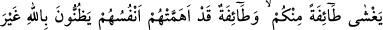
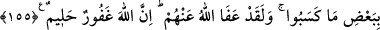

ALLAH HER ŞEYDEN
HABERDARDIR
153. O zaman Peygamber arkanızdan sizi çağırdığı halde, siz, durmadan (savaş
alanından) uzaklaşıyor, hiç kimseye dönüp bakmıyordunuz. (Allah) size keder
üstüne keder verdi ki, bundan dolayı gerek elinizden gidene, gerekse başınıza
gelenlere üzülmeyesiniz. Allah yaptıklarınızdan haberdardır.
154. Sonra o kederin arkasından Allah size bir güven indirdi ki, (bu güvenin yol
açtığı) uyuklama hâli bir kısmınızı kaplıyordu. Kendi canlarının kaygısına düşmüş
bir gurup da, Allah’a karşı haksız yere cahiliye devrindekine benzer düşüncelere
kapılıyorlar; “Bu işten bize ne!” diyorlardı. De ki: İş (zafer, yardım, her şeyin karar
ve buyruğu) tamamen Allah’a âittir. Onlar, sana açıklayamadıklarını içlerinde
gizliyorlar. “Bu işten bize bir şey olsaydı, burada öldürülmezdik” diyorlar. Şöyle
de: Evlerinizde kalmış olsaydınız bile, öldürülmesi takdîr edilmiş olanlar, öldürülüp
düşecekleri yerlere kendilerinden çıkıp giderlerdi. Allah, içinizdekileri yoklamak
ve kalplerinizdekileri temizlemek için (böyle yaptı). Allah içinizde ne varsa hepsini
bilir.
155. (Uhud’da) iki ordu karşılaştığı gün, sizi bırakıp gidenleri, sırf işledikleri bazı
hatalar yüzünden şeytan (yerlerinden) kaydırmıştı. Yine de Allah, onları affetti.
Çünkü Allah, çok bağışlayıcıdır, halîmdir.